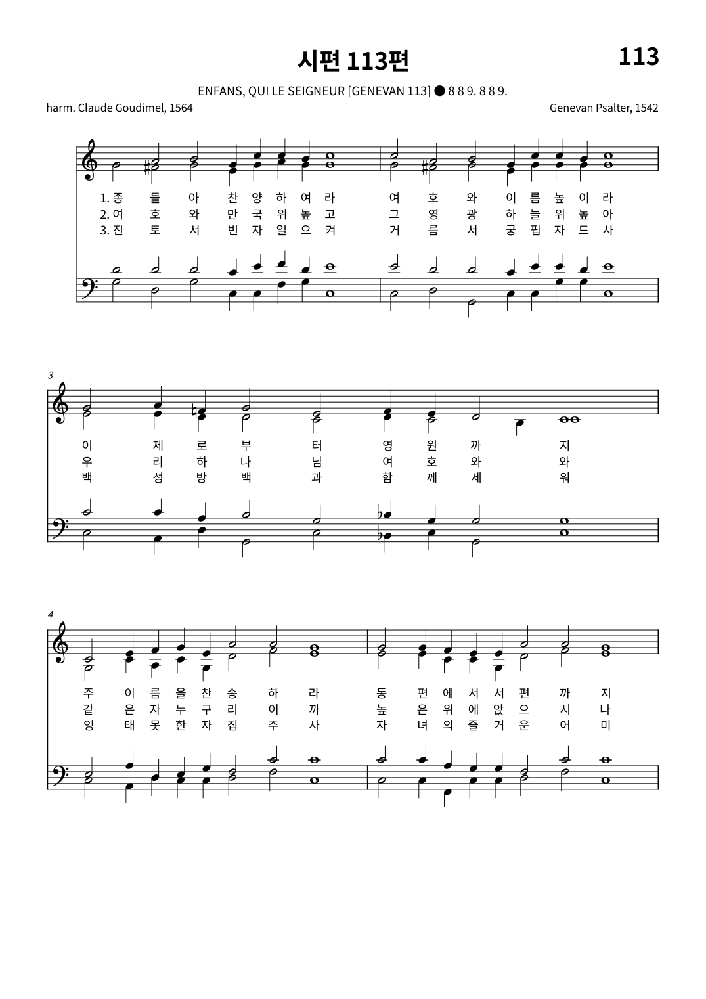

Psalm 113
ENFANS, QUI LE SEIGNEUR [GENEVAN 113] · 8 8 9. 8 8 9.
English title: Come, Praise the LORD, His Might Proclaim!
Tune: Genevan Psalter, 1542 · Harmony: Claude Goudimel, 1564 · Lyrics: Korean adaptation of Psalm 113 from the Korean Revised Version (AI draft adaptation · not yet theologically reviewed) · 3 stanzas
Score PDF MusicXML (for printing) MusicXML (for accompaniment, with prelude and repeats) Read Psalm 113 (Korean Revised Version)
Score
← Psalm 112 ListAccompaniment (in preparation)Psalm 114 →
Lyrics (Korean)
Stanza 1
종들아 찬양하여라
여호와 이름 높이라
이제로부터 영원까지
주 이름을 찬송하라
동편에서 서편까지
그 이름 찬양 받으시리
종들아 찬양하여라
여호와 이름 높이라
이제로부터 영원까지
주 이름을 찬송하라
동편에서 서편까지
그 이름 찬양 받으시리
Stanza 2
여호와 만국 위 높고
그 영광 하늘 위 높아
우리 하나님 여호와와
같은 자 누구리이까
높은 위에 앉으시나
스스로 낮춰 보시도다
여호와 만국 위 높고
그 영광 하늘 위 높아
우리 하나님 여호와와
같은 자 누구리이까
높은 위에 앉으시나
스스로 낮춰 보시도다
Stanza 3
진토서 빈자 일으켜
거름서 궁핍자 드사
백성 방백과 함께 세워
잉태 못한 자 집 주사
자녀의 즐거운 어미
되게 하시니 할렐루야
진토서 빈자 일으켜
거름서 궁핍자 드사
백성 방백과 함께 세워
잉태 못한 자 집 주사
자녀의 즐거운 어미
되게 하시니 할렐루야